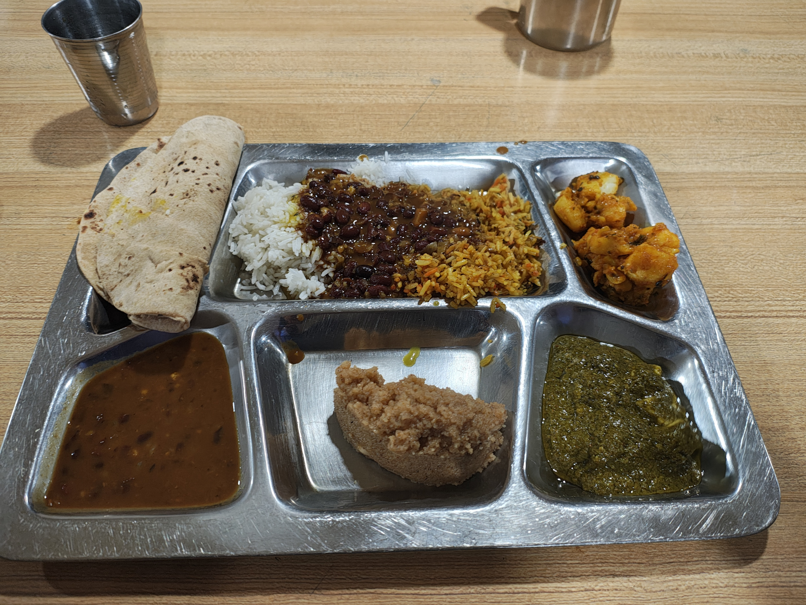

Introduction and Rock Craft - BMC Part 1¶
This section will cover the introduction to the Basic Mountaineering Course (BMC) and the initial phase focused on rock craft.
I will detail the orientation, the first few days at the institute, and the basics of rock climbing techniques taught during the course.
More content will be added as I write up my experiences in detail.
Overview¶
The entire BMC course is divided into 3 main sections. This being the first one. The training in this part of the course focused mainly on building the skills and the physical endurance needed for the rest of the training. These 8 odd days were spent at the institute in Darjeeling itself.
Now that we have the basic idea, let's start.
Introduction to the course and the institute¶
On the very first day, we were assigned our hostels. I was in a big room which was occupied by about 20 people. This was extremely fun and added to the overall experience.
Post this, we were given a tour of the entire Institute grounds and we were told about the rules and regulations etc. Fairly normal till this point. Soon, we were introduced to our instructors and given a detailed outline of what to expect for the course and how to go about the entire training. The next few days were going to be very very packed.
For the next 8 days, we would have a PT session every morning which would involve running and some exercises. The main training focus for this time would be rock-craft. This encompasses everything from basic rock-climbing techniques, belaying, rappelling and building fixed anchors. Apart from these we also learnt a LOT of theory; some of the topics covered were avalanches, ropes, mountaineering equipment, waste-management and sanitation, first-aid and medication on the mountains etc.
Morning PT¶
Every morning we would wake up at 5 A.M. and then our PT would start at 6 A.M. This involved a run, followed by body-weight exercises. The runs were brutal. I was still struggling with my knee pain and shin-splits; I realized that the shoe I was using was very hard and that not conducive to a good running experience; especially on city roads. During these runs I was always at the back of the entire batch, unable to keep up. I was also sent back from the PT on two occasions because I was very far behind the entire group.
The physical exercises were OK. I had trained for this significantly and didn't feel that they were too bad.
Here is a photo of us assembling in the quarter-angle before our march to Tenzing Rock.
Equipment Distribution¶
HMI gave us all the equipment that we would need for the course. Things included ropes, carabiner(s), harness, descender, sleeping bag, rucksack etc etc.
Some of the equipment were meant to be shared by a group of people (ropes, cams, pitons etc) , while the rest were to be used individually by a person (harness, sleeping bag) etc.
I volunteered to manage and take care of all the equipment for our rope (group). It was fun and I got to spend a lot of time look / playing with cams and pitons etc.
It was made abundantly clear that we were responsible for the equipment allotted to us and if we failed to return any of them, then we would have to pay for the damages.
Rock Climbing¶
For rock-climbing training we went to Tenzing Rock. This a rock just about 2 km from the institute. This rock has some rock-faces with various degrees of difficulty. Some of the faces are less steep while some were quite steep. There was one face which was extremely long and has a huge overhand. We were not allowed to climb on this face; we only got to rappel on this face. That too only once.
Climbing on this rock was easy except for the overhangs. I realized that my bottleneck is the upper-body strength. My arms and my grip etc are too weak to be of any use especially on routes that need upper-body strength (like overhangs do). This will be a common theme throughout the entire course.
We also spent some time in the indoor rock-climbing wall. I am disappointed in the overall time we spent doing practical training vs theory lectures. I personally felt that a LOT of the theory classes could have been skipped, which would have given us more time for practical training.
Belaying¶
We were taught how to belay a fellow climber using a figure-of-8 descender. I was surprised with how quickly we were allowed to belay another climber after the initial demo. Again, this attitude will be a common theme throughout. The instructors would give us a demo of what to do and then throw us in the deep end of the pool, with some supervision of-course. It took sometime before I realized that the instructors were watching us like hawks. Even one wrong movement / technique that could potentially cause an injury, and the instructors would take over.
This was a relief, as my anxiety really didn't let me climb unless I was certain that the person belaying me was not going to drop me.
Rappelling¶
We were taught various types of rappelling which includes rappelling with a descender and without one. These were by far the most scariest / difficult. The most scariest form of rappelling was the 'stomach rappel' that we had to practice. I remember freezing halfway into it and being unable to move; with some encouragement I was able to complete it. Rappelling with a descender was easy, though it did take me sometime to get used to the feeling of trusting the rope and the descender.
I was still not able to rappel as fast as some of the instructors were able to. I'm hopeful that with enough time spent of the rock I will get better at this skill.
We used a Figure-8 as our rappelling and belay device. Even though this is an old device, I feel that choosing to use this device for the course added to the experience as one needs to master the basics before moving onto the advanced tools.
I was still disappointed that they didn't teach us a lot of the advanced techniques on this course; But in all fairness I feel that this is exactly how the entire course is designed.
KNOTS and Rope-Skills¶
This was something that I was the most excited to learn. We were taught about 10 different types of knots and some more hitches. Most of these were fairly easy. I was extremely impressed with the bowline knot and got really really good at it. The figure-of-8 is something that I already knew, so it wasn't too hard to learn here as well while I found myself really struggling with the running Clove-Hitch.
We were also taught basic rope-handling, things like coiling etc etc. It was fun. This was building up the base for what was coming in the next few weeks.
Apart from this, we were also taught how to rope-up, which is an essential technique for walking across a glacier field. The idea is that team-members attach themselves to a rope so that if someone falls in to a crevasse (which happens often on a glacier), the rest of the members can rescue them. This is a very very diluted version, but the essential idea is safety.
Food at HMI¶
Initially I was very very apprehensive about the food as my research didn't say good things about the food here. However, once at the institute I was very much surprised. The food was really delicious and healthy. I was expecting to lose weight, which I did not; at-least during the first 10 days of the course.

Medical Exam and BP¶
Throughout the entire course there were medical check-ups which primarily focused on the Blood-Pressure and Oxygen Saturation. These were used as a measure to detect early signs Acute Mountain Sickness (AMS).
We were told that anyone who had a BP of 150/90 at Darjeeling would have to stay back as such a high blood-pressure at an altitude to 9000ft meant that they would have serious trouble high up in the basecamp (14600 ft).
My BP on day-1 was slightly higher 140/80, but it settled down to 120/80 and remained there throughout the rest of the course. That was a relief.
Tiger Hill Trek¶
This was a hike to Tiger Hill. It was meant as a test to see if the rucksack that was issued to us was in a good condition and to get used to the idea of carrying 16+ kilos up a hill.
It is on my Strava.
This trek didn't feel too bad. The final climb was tough and it feel difficult. I could feel my knee giving me trouble.
The course director told that since the timing for the entire batch was good on this trek, most of would make it through the Pandem Test. I was very worried about this. I really thought that I would get eliminated because of my knee.
Pandem Test¶
This is an endurance test that everyone at HMI as to go through. The only requirement is that you carry a 15 kilo backpack (they measure this at the end); without your water weight. The cut-off time to complete the full circuit is 3 hours and the entire length is about 13km. Here is the Strava
The test started off with a large downhill walk which lasted for about 7 km. Everyone used this to gain some time and basically ran through the roads. I could not because of the knee. It was extremely disheartening to see so many people overtake me and disappear into the horizon.
However after 7 km we have a gradual 16% incline for about 4 km, which is where I walked like a tractor and gained back a LOT of the time I had lost. Fortunately the knee did not cause trouble on the uphill sections. I was thankful for that.
I was very happy that I was able to complete this test successfully in 2 hours and 25 mins.
Anyone who was not able to finish the course in 3 hours were sent back.
Knee Pain :(¶
This damm knee pain has been a constant companion for more than a year at this point. Even though the initial pain has been fixed, the pain I was experiencing at this point felt like ITBS. Which is why I was not too much worried about the internal components of the knee. That said, the pain was still bad enough that I winced every-time I moved my right leg. It was worse on the downhill sections. I resorted to waddle to help me with the pain, that way I could walk without bending my right knee.
When they let us have an outing into the city after the Pandem Test, I went and bought a lot of very strong painkillers. These were a notch above the basic Ibuprofen that I was relying on. These had an anti-inflamatory component in them and they did work. I stocked-up on these for the rest of the course. however, I didn't have to rely on them as much as I had thought I would have to. This was a pleasant surprise. Either the pain was lesser or I was used to it.
Onto the Next Phase¶
With the first phase of the BMC over, we are now ready for the next phase, which is a long hike to the HMI Basecamp at Chowrikhang.
Keep Reading at Hike To Basecamp